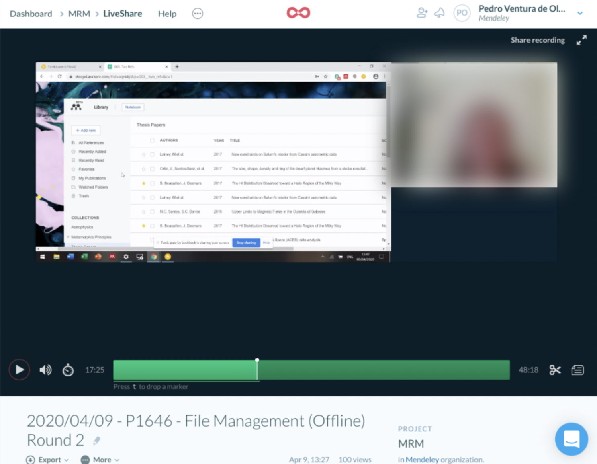
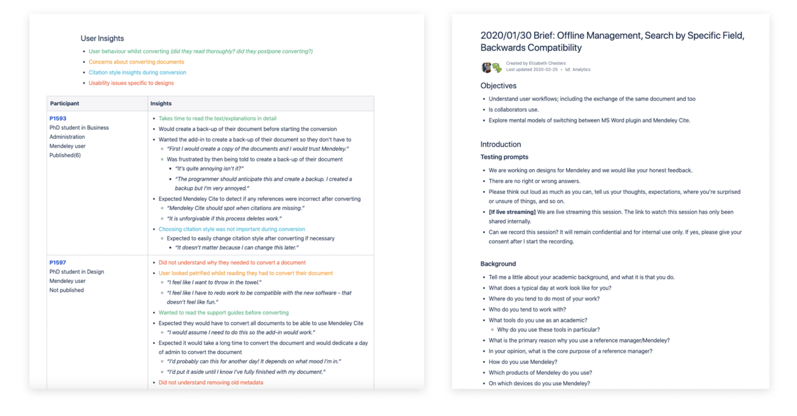
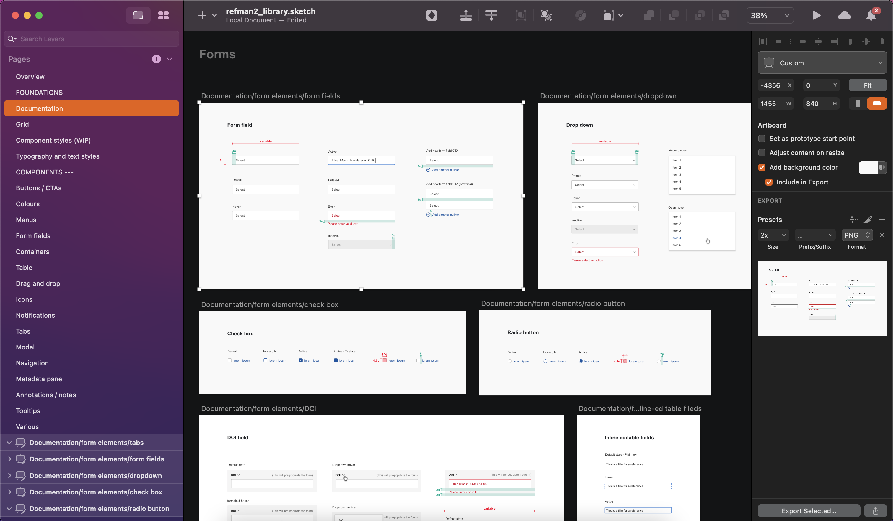
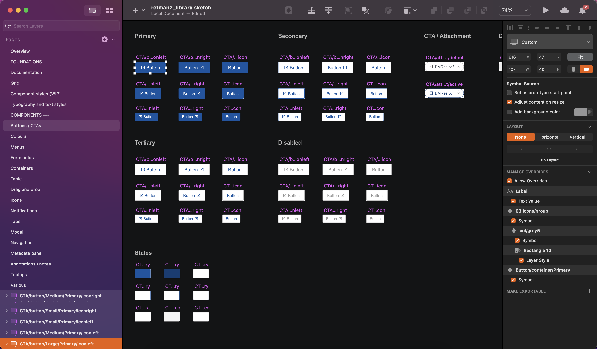
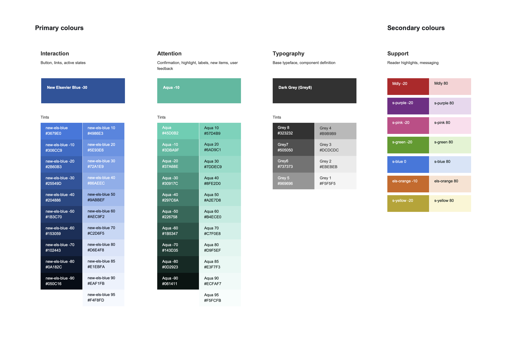
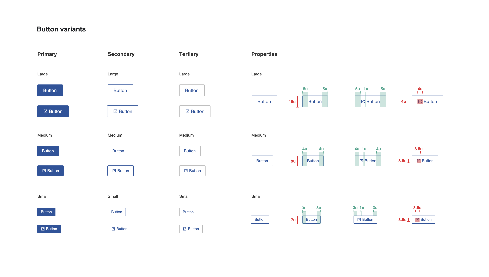
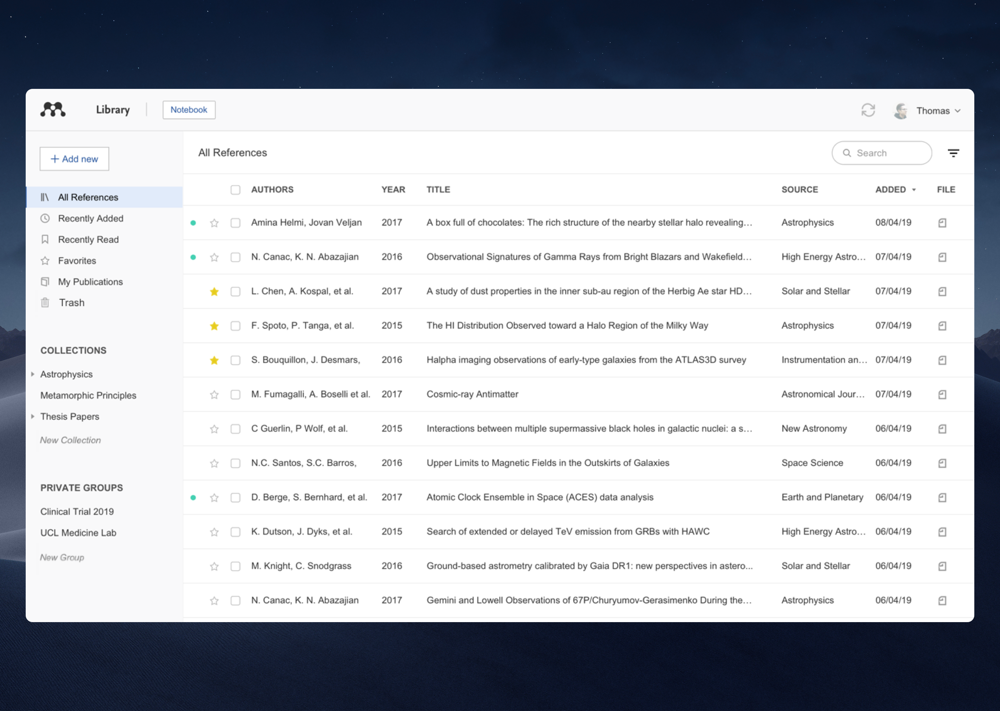
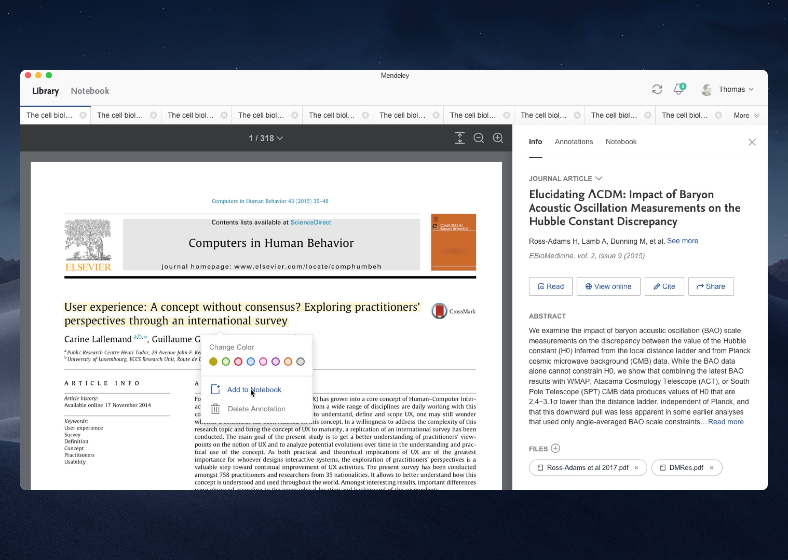
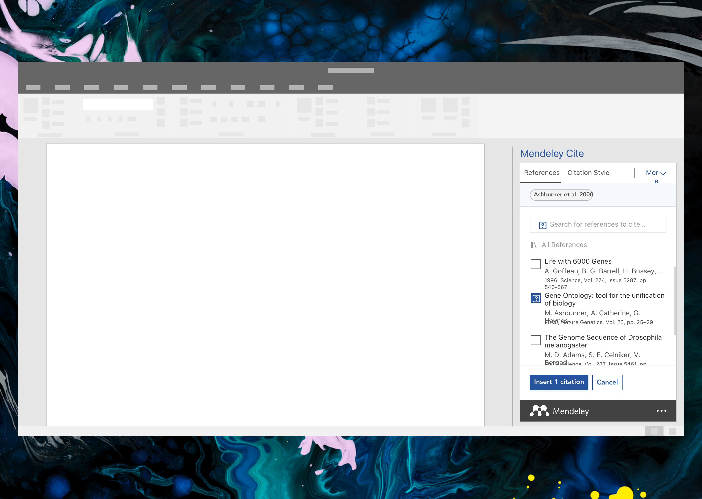

mendeley reference management
the web and desktop application that simplifies the reference management workflow

Overview
The project
The Mendeley Reference Manager (MRM) is the new reference manager tool offered by Elsevier and developed by Mendeley that helps academic and non-academic researchers organise, store and analyse their research.
Currently, it is in open beta (since the summer of 2019) and has +120k users.
My role
From 2019 to 2020, I was a senior member of the MRM design team that serves 3 cross-functional scrum teams and 2 products (Mendeley Reference Manager and Mendeley Cite). In this team setup, I worked collaboratively with product owners, business analysts, and developers to design, deliver to production, and optimise a productivity tool that meets the needs of the science research communities. The day-to-day activities were a mix of project planning, user research and testing, concept design, and detailed user experience and interaction design.
Main challenges & requirements
Elsevier already had an early-stage version of the app on the market, called Mendeley Desktop (MD), which was launched in 2007 and has more than 4M active users.
Due to technical limitations, we could not automatically migrate users from MD to the new MRM app. Rather, we had to conduct thorough research to understand the end-user specific needs, workflows, and day-to-day activities, and then use the feedback to improve significantly every single feature of MRM so that the users would be persuaded to migrate to the new version.
Another major challenge for our team was offering the same experience online and offline, the same technology stack and experience across Web & Desktop and different OS, despite working under strict deadlines and technical constraints.
In addition to the technical challenges around migration and feature parity, Elsevier at the time was going through organisational change to enhance internal processes and align experiences between products. This generated certain change management problems for us as we were striving to align with how other departments worked while still creating a meaningful user experience for our target audience.
With this in mind, we set out to create not just a more modern, flexible, and welcoming user interface, but also a more accessible one for our end users.
Research
Planning, conducting, and documenting user sessions
Mendeley has a well-established research program in place and the team had already undertaken some usability testing, so user feedback regarding certain features was already available to help guide our UI design decision-making.
But due to the complexity of the application and the initial requirements, it was essential that research and testing were ongoing.
Every quarter we would reach out to users via email inviting them to join the weekly interview slots which were curated by a few members of the team. These slots could then be used for qualitative interviews, general usability testing, and even combine interviews from multiple teams.
My team would have weekly 7 to 10 users coming to the office to provide feedback on the features we were testing. We would use lookback to test the prototypes and live-stream the interview to all members of the cross-functional team.
I've been in cardiac arrest situations where you're on call, it's the middle of the night, you've never met the patient before but your alarm goes off. You go down to the ward to help and you don't know who the patient is, and you're having to wait for a computer to load, just to figure out who they are, why they came in, what might be wrong with them, what's wrong with them. Whereas before, you could pick up the notes and flick through. In two minutes you've got an idea of who that patient is... I like technology but I don't like it if it's not fit for purpose or if people haven't really thought about how we as human beings need to use it.
MRM Beta userin one of our user interview sessions
Analysing, tagging, and sharing findings
All research was stored, tagged, and organised into a shared repository so that all team members could access new and previous research to understand user behaviour, identify patterns and make more informed decisions that help the project their working on.
We used primarily confluence to store and organise research (left) and dovetail to tag and quickly access research findings (right).
Maintaining a design documentation
With all the ongoing research and design iterations happening it was crucial that we keep track of the changes and be mindful of scope creep.
To this end, we decided to create detailed design documents in confluence that described all parts of the application and how they operated. This documentation, albeit tricky to create and maintain, helped coordinate the efforts of our large team and gave us a stable reference point that ensured our product is built to meet actual user needs and is on par with what was agreed during the project planning.
We also included in those documents recommendations on how to apply consistently the new styles and components across different aspects of the app based on the work we did on the UI Pattern Library.
UI Pattern Library
Over my time in the MRM design team, I was involved heavily in the creation and implementation of the Reference Manager UI Pattern Library. This living document was updated as we refined our design approach and process and it contained the base UI components that are the building blocks for the re-design of the MRM.
Usage
This pattern library was considered the masterfile. All the components were created as symbols and linked to any working Sketch files for new UI flows and application design.
Structure
Foundations - Component specifications and states, typography and text styles
 
Components - Symbols for specific components
 Our library has been a hugely beneficial effort that's made our application more cohesive, more accessible, and aesthetically pleasing.
The MRM Application
As we strived to understand our users we also strived to produce high-quality, polished visual designs and interactions.
By working iteratively, we went through cycles where we closely examined each iteration, and determined what changes are needed to deliver the best possible experience to our users.
Bellow, you can read more about the features of each one of our main 3 products:
MRM Library
For managing, editing, and organising references from just one library and enabling collaboration with other researchers by sharing references and ideas.
MRM Reader
For reading, highlighting, and annotating PDFs, within the Reference Manager while reading papers. Keeping everything across multiple documents in one place.
Mendeley Cite
The new Citation MS Word add-in for seamlessly inserting references and bibliographies into Microsoft® Word documents using Mendeley Cite.
Results so far
📈 Today (Stats as of Feb 2020) MRM has +120k users while in beta. More than 1M references were created and +1M annotations were created using the features in MRM.